Dieses Handbuch beschreibt die Bedienung der Doppelblockwarte von ReactorControl. Die Anlage besteht aus zwei baugleichen Blöcken mit gemeinsamen Hilfsanlagen. Beide Blöcke lassen sich unabhängig voneinander anfahren, abfahren und ans Netz legen.
Die Gliederung folgt den Anlagenteilen. Zu jedem Teil gehören Steuerung, Rückmeldungen und Fehlerbehebung. Wer im Betrieb eine Störung sucht, springt direkt in das Fehlerbehebungs-Kapitel des betroffenen Anlagenteils. Da beide Blöcke identisch aufgebaut sind, gilt jede Beschreibung für beide.
Die Einträge im Inhaltsverzeichnis sind anklickbar. Zusätzlich steht die Gliederung im Lesezeichenbereich des PDF-Betrachters.
| Pultfläche | Inhalt | Elemente | Kapitel |
|---|---|---|---|
| Links | Block 1 vollständig: Reaktor, Primärkreis, Sicherheitssysteme, Sekundärkreis, Turbosatz | 87 | 4 – 7 |
| Mitte | Gemeinsame Anlagenteile: Stromversorgung, Kühlwasser, Nebenanlagen, Blockfreigaben, Netzschalter, Hauptanzeigen, Statusleisten | 136 | 2, 3, 8 |
| Rechts | Block 2 vollständig, baugleich zu Block 1 | 87 | 4 – 7 |
Jede Pultfläche trägt drei Bedienbänder. Ein Band besteht aus einer Reihe Meldeleuchten und der Tasterreihe darunter.
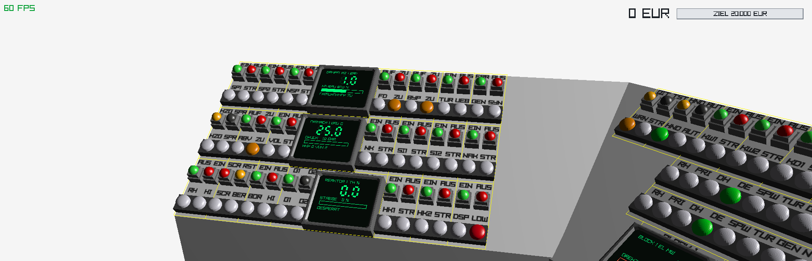
Abbildung 1 — Linker Flügel: Block 1 vollständig. Drei Bedienbänder, dazwischen die drei Anzeigen des Blocks.
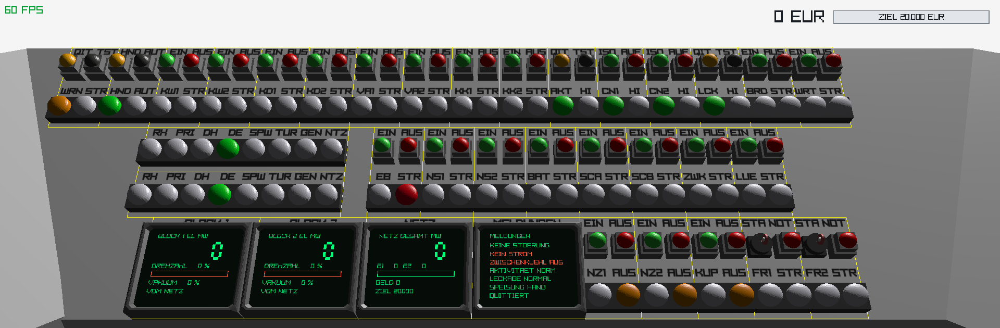
Abbildung 2 — Mittelfläche: gemeinsame Anlagenführung. Unten die vier Hauptanzeigen, darüber die beiden Statusleisten und die Stromversorgung, ganz oben die Nebenanlagen.
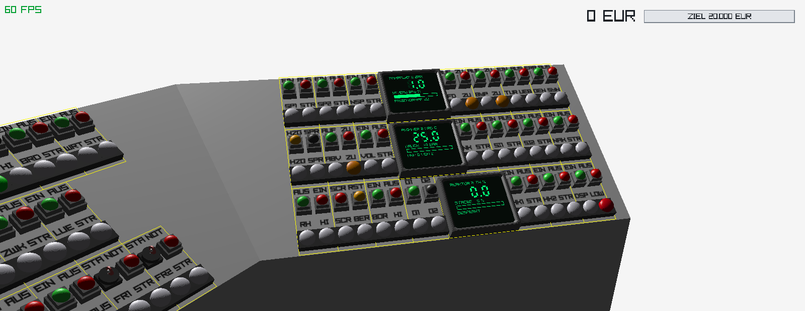
Abbildung 3 — Rechter Flügel: Block 2, baugleich zu Block 1.
Jeder schaltbare Antrieb wird nach demselben Muster bedient und ist am Pult durch eine Umrandung zusammengefasst:
Auf dem Bildschirm erscheinen die Taster deshalb oberhalb der zugehörigen Leuchten: das Pult ist geneigt, und was weiter vom Bediener entfernt liegt, sitzt im Bild weiter oben. Jede Beschriftung steht unmittelbar über dem Element, zu dem sie gehört.
Ein gedrückter Taster bedeutet nicht, dass der Antrieb läuft — der Taster ist ein Befehl, keine Zustandsanzeige. Maßgeblich ist ausschließlich die Meldeleuchte. Bleibt sie nach dem Befehl dunkel, wurde er nicht ausgeführt; die Ursache steht im Fehlerbehebungs-Kapitel der Baugruppe.
| Anzeige | Bedeutung | Handlungsbedarf |
|---|---|---|
| weiß (dunkel) | Zustand liegt nicht vor | keiner |
| grün | Betrieb, Sollzustand erreicht | keiner |
| orange | Warnung oder Gegenstellung (z. B. Ventil ZU) | beobachten |
| rot, dauerhaft | Störung, bereits quittiert | Ursache beseitigen |
| rot, blinkend | Störung, noch nicht quittiert | quittieren, dann Ursache beseitigen |
Die Beschriftungen sind auf drei Zeichen begrenzt (Kapitel 10.2). Diese Tabelle löst sie auf — sie ist die wichtigste Seite dieses Handbuchs für den täglichen Betrieb.
| Kurz | System | Kurz | System |
|---|---|---|---|
| RX | Reaktor, Regelstäbe | EB | Eigenbedarf |
| SCR | Schnellabschaltung | NS1 NS2 | Notstromdiesel 1 und 2 |
| BOR | Boreinspeisung | BAT | Batterieversorgung |
| G1 G2 | Stabgruppen 1 und 2 | SCA SCB | Schiene A und B |
| HK1 HK2 | Hauptkühlmittelpumpen | ZWK | Zwischenkühlkreis |
| DSP | Druckspeicher | KK1 KK2 | Komponentenkühlung je Block |
| HZG SPR | Druckhalter: Heizung, Sprühen | KW1 KW2 | Hauptkühlwasser je Block |
| ABV | Primäres Abblaseventil | KD1 KD2 | Kondensator je Block |
| VOL | Volumenregelung | VA1 VA2 | Vakuumpumpe je Block |
| NK | Notkühlung | LUE | Lüftung |
| SI1 SI2 | Sicherheitseinspeisung Strang 1, 2 | FR1 FR2 | Blockfreigabe je Block |
| NAK | Nachkühlsystem | NZ1 NZ2 | Netzschalter je Block |
| SP1 SP2 | Speisewasserpumpen | KUP | Schaltanlagenkupplung |
| NSP | Notspeisewasser | AKT | Aktivitätsüberwachung |
| FD | Frischdampfventil | CN1 CN2 | Containment je Block |
| BYP | Umleitstation | LCK | Leckageüberwachung |
| TUR | Turbine | BRD | Brandschutz |
| GEN | Generator | WRT | Wartenklimatisierung |
Auf den Tastern und der rechten Leuchte stehen die Aktionen und Zustände: EIN · AUS · AUF · ZU · STR Störung · HI Grenzwert überschritten · LOW Wert zu niedrig · BER bereit · RST rücksetzen · SYN synchronisierbereit · UEB Überdrehzahl · ERR erregen · QIT quittieren · TST Lampentest · ISO abriegeln · STA Start.
Die Mittelfläche trägt alles, was beide Blöcke gemeinsam nutzen. Diese Systeme werden zuerst in Betrieb genommen — ohne sie lässt sich kein Block anfahren.
Die Stromversorgung ist die unterste Stufe der gesamten Anlage. Sie gilt als vorhanden, wenn gleichzeitig
Eigenbedarf allein genügt nicht. Ohne zugeschaltete Schiene liegt kein Strom an, und jeder Antriebsstart wird abgewiesen. Schalte immer beides: erst die Einspeisung, dann eine Schiene.
Die Batterieversorgung BAT und die Schaltanlagenkupplung KUP lassen sich unabhängig davon schalten. Einspeisungen, Schienen und Batterie sind die einzigen Systeme, die selbst keinen Strom brauchen — sonst ließen sie sich nie starten.
Jeder Block hat seine eigene Kondensationsanlage, bedient wird sie aber von der Mittelfläche. Die drei Stufen bauen aufeinander auf:
| Stufe | Kennzeichen | Voraussetzung |
|---|---|---|
| 1. Hauptkühlwasser | KW1 / KW2 | Strom |
| 2. Kondensator | KD1 / KD2 | Hauptkühlwasser desselben Blocks |
| 3. Vakuumpumpe | VA1 / VA2 | Kondensator und Hauptkühlwasser |
Erst wenn die Vakuumpumpe läuft, baut sich das Kondensatorvakuum auf — bis etwa 95 %, über einige Sekunden. Die Turbine lässt sich erst oberhalb von 50 % Vakuum einschalten. Deshalb gehört diese Kette früh in die Anfahrsequenz.
Der Zwischenkühlkreis ZWK versorgt die Komponentenkühlung beider Blöcke KK1 und KK2. Diese wiederum kühlt die Lager der Hauptkühlmittelpumpen.
Zwischenkühlkreis → Komponentenkühlung → Hauptkühlmittelpumpen. Ohne ZWK lässt sich KK1 nicht starten, und ohne KK1 läuft keine Hauptkühlmittelpumpe von Block 1 an.
| Gruppe | Funktion |
|---|---|
| LUE | Lüftung der Anlagenräume |
| BRD | Brandschutzsystem |
| WRT | Wartenklimatisierung |
| AKT | Aktivitätsüberwachung. Steigt an, wenn ein Block überhitzt und sein Containment nicht abgeriegelt ist. Mit QIT zurücksetzen. |
| LCK | Leckageüberwachung, gleiche Auslösebedingung |
| CN1 / CN2 | Containment je Block. ISO riegelt ab, AUF gibt wieder frei. |
| HND / AUT | Betriebsart. In AUTO regeln die Speisewasserpumpen das Dampferzeugerniveau selbst. |
| Beobachtung | Ursache | Abhilfe |
|---|---|---|
| Meldung „… OHNE STROM“, kein Antrieb startet | Keine Einspeisung oder keine Schiene | EB oder NS1/NS2 einschalten und SCA oder SCB zuschalten |
| Meldung „… OHNE VORSYSTEM“ | Ein vorgelagertes System fehlt | Reihenfolge aus Kapitel 2.2 bzw. 2.3 einhalten |
| Ein Aggregat fällt im Betrieb von selbst ab | Sein Vorsystem oder der Strom ist weggefallen | Vorsystem wiederherstellen, dann neu starten |
| AKT und LCK blinken rot | Ein Block über 320 °C bei offenem Containment | Kühlung verbessern, Containment mit ISO abriegeln, danach quittieren |
Jeder Block hat auf der Mittelfläche eine eigene Freigabegruppe FR1 beziehungsweise FR2; die Schnellabschaltung SCR sitzt auf der jeweiligen Blockfläche.
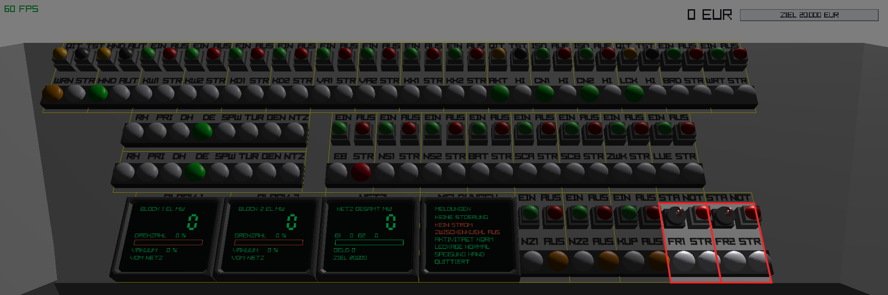
Abbildung 7 — Die beiden Freigabegruppen auf der Mittelfläche. Je Block ein Schlüsselschalter STA und daneben der Block-NOT-AUS; darunter die Leuchten FR1 beziehungsweise FR2 und die Sammelstörung.
Der Schlüsselschalter STA gibt den Block frei. Ein Klick dreht ihn in die andere Stellung. Ohne Freigabe lassen sich weder Regelstäbe ausfahren noch Antriebe des Blocks starten. Beim Zurückdrehen fahren die Regelstäbe auf 0 % ein.
Der Schlüssel zeigt seine Stellung nicht am Modell an, weil beide Stellungen dasselbe 3D-Modell verwenden. Die tatsächliche Stellung liest man an der Leuchte FR1 beziehungsweise FR2 ab.
Der rote Taster NOT neben dem Schlüssel wirft den gesamten Block ab: Schnellabschaltung, alle Haupt- und Speisewasserpumpen aus, Turbine, Generator und Netzschalter ab, Frischdampf- und Umleitventil zu, Schlüssel springt auf AUS. Der andere Block läuft unbeeinflusst weiter.
SCR auf der Blockfläche löst nur die Reaktorschnellabschaltung aus — die Regelstäbe fallen auf 0 %, die übrige Blockanlage läuft weiter. Das ist der schonendere Eingriff, weil die Kühlung erhalten bleibt.
RST setzt zurück. Das gelingt nur, wenn quittiert wurde und keine Auslösebedingung mehr ansteht: Primärdruck unter 170 bar, Kühlmitteltemperatur unter 320 °C, Dampferzeugerniveau über 30 %.
| Leuchte | Ort | Bedeutung |
|---|---|---|
| FR1 / FR2 | Mitte | Block freigegeben, Schlüssel auf START |
| STR | Mitte | Sammelstörung, blinkt bis zur Quittierung |
| SCR | Blockfläche | Schnellabschaltung ausgelöst, Stäbe eingefahren |
| BER | Blockfläche | Block freigegeben und keine Schnellabschaltung anstehend |
| Beobachtung | Ursache | Abhilfe |
|---|---|---|
| FR bleibt nach dem Drehen dunkel | Schlüssel steht auf AUS | Erneut klicken |
| RST zeigt keine Wirkung | Nicht quittiert oder Auslösebedingung steht noch an | QIT drücken, dann Druck, Temperatur und Niveau in den zulässigen Bereich bringen |
| Block fällt selbsttätig ab | Schutzauslösung | Klartext auf dem Display MELDUNGEN lesen, siehe Kapitel 9.5.1 |
Der Reaktor erzeugt die thermische Leistung und ist die Eingangsgröße für den gesamten Block. Die Bediengruppen liegen im obersten Band der Blockfläche.
Die Regelstäbe sind in zwei Gruppen aufgeteilt. G1 und G2 geben die jeweilige Gruppe frei; beide Taster arbeiten als Umschalter. Mindestens eine Gruppe muss freigegeben sein, sonst lassen sich die Stäbe nicht ausfahren und es erscheint die Meldung „KEINE STABGRUPPE“.
Die Stabstellung wird in Prozent angegeben: 0 % ganz eingefahren (Reaktor abgeschaltet), 100 % ganz ausgefahren (Volllast).
Die Leistung folgt der Stabstellung träge. Zusätzlich wirkt eine negative Temperaturrückkopplung: steigt die Kühlmitteltemperatur über 300 °C, sinkt die Leistung von selbst. Der Reaktor stabilisiert sich dadurch weitgehend selbst.
BOR speist ein Neutronengift in den Primärkreis und senkt die Reaktivität um etwa 40 Prozentpunkte Stabstellung. Sie ist die zweite, vom Stabantrieb unabhängige Abschaltmöglichkeit.
| Leuchte | Bedeutung |
|---|---|
| RX | Reaktor kritisch, Leistung über 1 % |
| HI | Leistung über 105 % oder Kühlmitteltemperatur über 320 °C |
| G1 / G2 | Stabgruppe freigegeben |
| BOR | Boreinspeisung läuft |
| Beobachtung | Ursache | Abhilfe |
|---|---|---|
| Meldung „KEINE STABGRUPPE“ | Weder G1 noch G2 freigegeben | G1 drücken, Leuchte muss grün werden |
| Stäbe fahren nicht aus | Block nicht freigegeben oder SCRAM aktiv | Kapitel 3.1.1 und 3.1.3 |
| Leistung bleibt trotz ausgefahrener Stäbe niedrig | Bor im Kreislauf oder Kühlmittel zu heiß | BOR AUS; Kühlung verbessern |
Zwei Hauptkühlmittelpumpen HK1 und HK2 wälzen das Kühlmittel um. Der Start setzt drei Bedingungen voraus: Blockfreigabe, Stromversorgung und die Komponentenkühlung des eigenen Blocks.
Eine einzelne Hauptkühlmittelpumpe reicht nur bis etwa halbe Leistung. Bei Volllast mit nur einer Pumpe steigt die Kühlmitteltemperatur bis zur Abschaltgrenze von 340 °C. Über 50 % Leistung müssen beide Pumpen laufen.
Die Wärme wird außerdem nur abgeführt, wenn im Dampferzeuger Wasser steht. Fällt dessen Niveau unter 20 %, bricht die Wärmeabfuhr fast vollständig zusammen, auch bei laufenden Pumpen.
Der Druckhalter stellt den Primärdruck ein. Er folgt der Kühlmitteltemperatur; mit den beiden Tastern lässt er sich um jeweils rund 25 bar verschieben. Beide arbeiten als Umschalter.
| Bereich | Druck | Bedeutung |
|---|---|---|
| Normalbetrieb | 100 – 170 bar | Statuslampe DH grün |
| Warnung | über 170 bar | WRN leuchtet, Displayzahl wird rot |
| Schnellabschaltung | über 185 bar | „DRUCK HOCH“ |
| Kurz | System | Wirkung und Einsatzfall |
|---|---|---|
| NK | Notkühlung | Führt sehr große Wärmemengen ab, unabhängig vom Dampferzeuger. Bei zu heißem Kühlmittel und nach SCRAM, wenn die Hauptkühlmittelpumpen fehlen. |
| SI1 SI2 | Sicherheitseinspeisung | Zwei unabhängige Stränge, führen zusätzlich Wärme ab und ersetzen Kühlmittel. |
| NAK | Nachkühlsystem | Für den abgeschalteten Reaktor, führt die Nachzerfallswärme ab. |
| VOL | Volumenregelung | Hält den Füllstand des Primärkreises. |
| DSP | Druckspeicher | Scharf geschaltet speist er selbsttätig ein, sobald der Primärdruck unter 40 bar fällt. Die Leuchte LOW zeigt diesen Zustand an. |
| ABV | Abblaseventil | Senkt den Primärdruck um etwa 20 bar pro Sekunde. Braucht keine Freigabe. |
Alle Pumpen melden über die linke Leuchte ihren Betrieb (Kennzeichen leuchtet grün) und über die rechte Leuchte STR eine Störung. Die Ventile ABV, FD und BYP melden ihre Endlage: es leuchtet immer genau eine der beiden Leuchten, links grün für AUF, rechts orange für ZU.
| Beobachtung | Ursache | Abhilfe |
|---|---|---|
| Meldung „OHNE KOMPKUEHLUNG“, STR blinkt | Komponentenkühlung des Blocks läuft nicht | ZWK, dann KK1 bzw. KK2 einschalten, quittieren, Pumpe neu starten |
| Meldung „… GESPERRT“ | Block nicht freigegeben oder kein Strom | Kapitel 2.1 und 3.1.1 |
| Temperatur steigt trotz laufender Pumpen | Nur eine Pumpe, oder Dampferzeugerniveau unter 20 % | Zweite Pumpe zuschalten, Speisewasser erhöhen |
| Druck steigt über 170 bar | Temperatur zu hoch oder Heizung ein | HZG aus, SPR ein, notfalls ABV öffnen |
Das Niveau wird über die Speisewasserpumpen SP1 und SP2 geregelt, unterstützt durch das Notspeisewasser NSP. Die Dampfentnahme senkt es.
Mit AUT auf der Mittelfläche regeln die Speisewasserpumpen selbsttätig: Pumpe 1 unterhalb 55 %, Pumpe 2 zusätzlich unterhalb 45 %. Das gilt für beide Blöcke gleichzeitig. Für das Anfahren dringend empfohlen.
| Bereich | Niveau | Folge |
|---|---|---|
| Schnellabschaltung | unter 10 % | „DE-NIVEAU TIEF“ |
| Wärmeabfuhr bricht ein | unter 20 % | Primärkreis heizt sich auf |
| Warnung tief | unter 30 % | WRN leuchtet |
| Normalbetrieb | 30 – 95 % | Statuslampe DE grün |
| Warnung hoch | über 95 % | Wasser wird auf die Turbine mitgerissen |
Das Frischdampfventil FD gibt den Dampf auf die Turbine frei; es lässt sich nur bei freigegebenem Block öffnen. Die Umleitstation BYP führt Dampf am Turbosatz vorbei in den Kondensator — zum Druckabbau beim Anfahren und nach einem Turbinenschnellschluss.
| Beobachtung | Ursache | Abhilfe |
|---|---|---|
| Niveau fällt trotz laufender Speisepumpen | Dampfentnahme übersteigt die Speisung | Zweite Pumpe zuschalten oder auf AUTO umschalten |
| Dampferzeugerdruck steigt unaufhaltsam | Kein Abnehmer: FD und BYP zu | Umleitstation öffnen oder Turbine in Betrieb nehmen |
| FD lässt sich nicht öffnen | Block nicht freigegeben | Schlüssel auf START |
Die Turbine TUR läuft nur an, wenn alle vier Bedingungen erfüllt sind:
Der Drehzahlregler hält sie anschließend auf 100 % Nenndrehzahl. Hochdrehen tritt nur beim Lastabwurf auf (Kapitel 9.5.2); bei über 110 % spricht der Überdrehzahlschutz an und wirft den Turbosatz ab.
ERR erregt den Generator, AUS nimmt die Erregung weg und öffnet zugleich den Netzschalter. Ohne Erregung liefert der Generator keine Leistung, auch wenn die Turbine dreht.
Die Netzschalter NZ1 und NZ2 liegen auf der Mittelfläche. Der Schalter lässt sich nur schließen, wenn der Generator erregt ist und die Drehzahl zwischen 98 % und 102 % liegt — sonst erscheint „SYNC GESPERRT“.
Die orange Leuchte SYN auf der Blockfläche zeigt an, dass alle Bedingungen erfüllt sind: sie ist das Startsignal für den Tastendruck.
Nach dem Schließen liefert der Block etwa das 3,3-fache seiner thermischen Leistung in Megawatt — bei 100 % also rund 330 MW. Der Erlös errechnet sich aus der Summe beider Blöcke.
| Beobachtung | Ursache | Abhilfe |
|---|---|---|
| Meldung „KEIN VAKUUM“ | Vakuum unter 50 % | KW, KD und VA des Blocks einschalten, Aufbau abwarten |
| Turbine dreht nicht hoch | FD zu oder Dampferzeugerdruck unter 15 bar | Ventil öffnen, Reaktorleistung erhöhen |
| Meldung „SYNC GESPERRT“ | Generator nicht erregt oder Drehzahl außerhalb 98–102 % | ERR drücken, auf die Leuchte SYN warten |
| Meldung „VOM NETZ“ | Erregung weggefallen oder Drehzahl unter 95 % | Dampfversorgung prüfen, neu erregen und synchronisieren |
| UEB leuchtet, Turbosatz abgeworfen | Überdrehzahl nach Lastabwurf | Kapitel 9.5.2 |
In der Mitte des Pults liegen zwei Reihen zu je acht grünen Leuchten — die obere für Block 1, die untere für Block 2. Sie bilden die Kette des jeweiligen Blocks ab und schalten beim Anfahren von links nach rechts durch. Leuchten alle acht, ist der Block vollständig am Netz.
| Leuchte | Leuchtet, wenn |
|---|---|
| RX | Reaktor kritisch, Leistung über 1 % |
| PRI | beide Hauptkühlmittelpumpen laufen |
| DH | Primärdruck zwischen 100 und 170 bar |
| DE | Dampferzeugerniveau über 30 % |
| SPW | mindestens eine Speisewasserpumpe läuft |
| TUR | Turbinendrehzahl über 95 % |
| GEN | Generator erregt |
| NTZ | Netzschalter geschlossen |
Die erste dunkle Leuchte von links zeigt, an welcher Stelle die Kette abreißt. Das ist der schnellste Weg zur Ursache, wenn ein Block nicht ans Netz kommt.
| Display | Ort | Hauptwert | Nebenwerte |
|---|---|---|---|
| REAKTOR 1 / 2 | Blockfläche | thermische Leistung in % | Stabstellung mit Balken, Freigabe- und SCRAM-Zustand |
| PRIMAER 1 / 2 | Blockfläche | Kühlmitteltemperatur in °C | Primärdruck mit Balken, Anzahl laufender Hauptkühlmittelpumpen |
| DAMPFERZ 1 / 2 | Blockfläche | Dampferzeugerdruck in bar | Niveau mit Balken, Stellung des Frischdampfventils |
| BLOCK 1 / 2 | Mitte | elektrische Leistung in MW | Drehzahl, Vakuum mit Balken, Netzzustand |
| NETZ | Mitte | Gesamtleistung beider Blöcke | Einzelleistungen, Erlös und Ziel mit Fortschrittsbalken |
| MELDUNGEN | Mitte | Klartext der letzten Störung | Strom, Zwischenkühlkreis, Aktivität, Leckage, Betriebsart, Quittierstand |
Alle Displays färben ihren Hauptwert rot, sobald er die Warngrenze überschreitet. Die Zahl ist damit selbst eine Meldung.
Der Klartext der letzten Störung steht auf dem Display MELDUNGEN und beginnt mit der Blocknummer, etwa „B2 DRUCK HOCH“.
Zuerst die gemeinsamen Anlagen, dann der Block. Wer eine Stufe überspringt, bekommt eine Störmeldung statt eines Anlaufs. Jeder Schritt zeigt die Bediengruppe in Nahaufnahme; der rote Kasten umschließt den zu drückenden Taster und die zugehörige Meldeleuchte.
Steuerung: Pfeiltasten ← und → wechseln die Blickrichtung, Linksklick drückt einen Taster, ESC beendet. Der Blick startet auf der Mittelfläche.
Stromversorgung, Kühlkette und Blockfreigabe. Alles auf der Fläche, auf die du beim Start schaust.
1Eigenbedarf EB → EIN
Die Normalversorgung. Sie allein genügt noch nicht — es fehlt die Schiene.
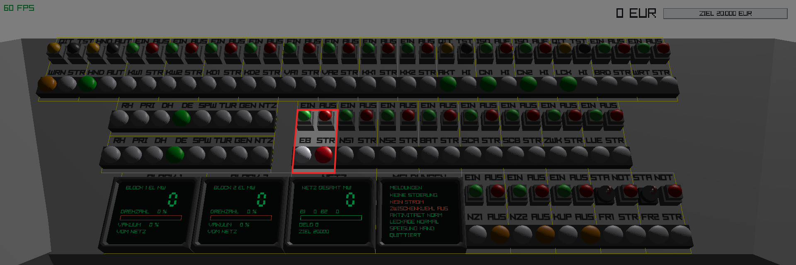
2Schiene A SCA → EIN
Erst jetzt liegt Strom an. Die rote Störleuchte neben EB erlischt, und ab hier lassen sich überhaupt Antriebe starten.
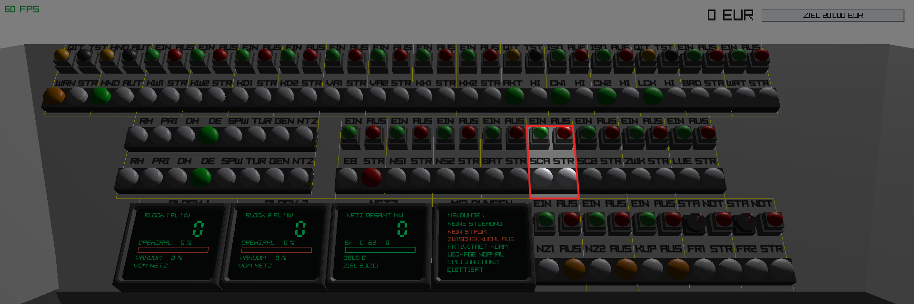
3Zwischenkühlkreis ZWK → EIN
Versorgt die Komponentenkühlung beider Blöcke.
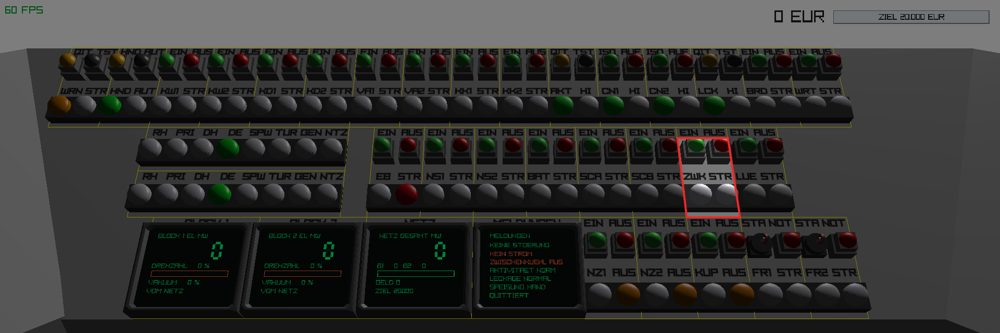
4Komponentenkühlung KK1 → EIN
Kühlt die Lager der Hauptkühlmittelpumpen. Ohne sie werden die Pumpen später abgewiesen.
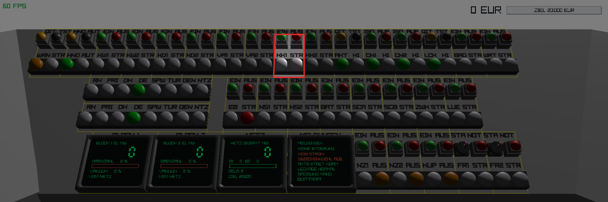
5Hauptkühlwasser KW1 → EIN
Erste Stufe der Kondensationsanlage.
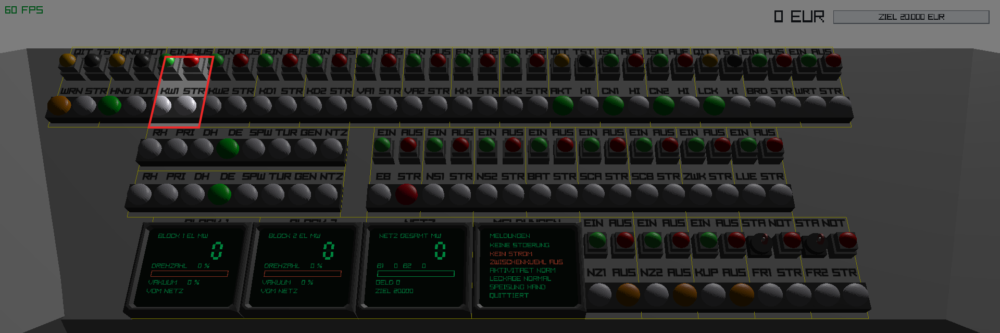
6Kondensator KD1 → EIN
Setzt das Hauptkühlwasser voraus.
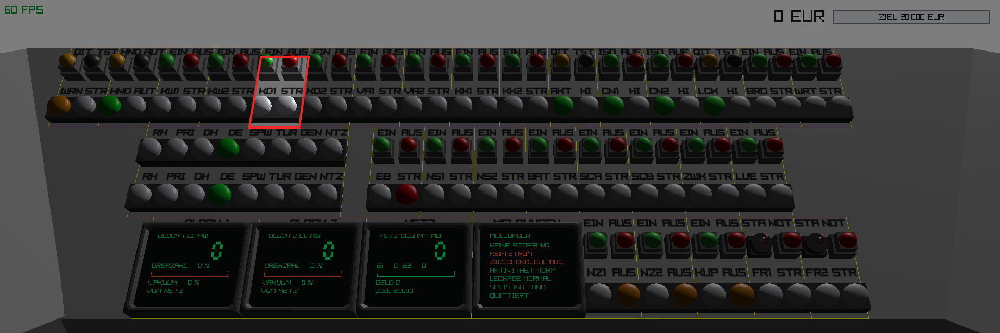
7Vakuumpumpe VA1 → EIN
Setzt Kondensator und Kühlwasser voraus. Das Vakuum baut sich über einige Sekunden auf bis etwa 95 % — ablesbar auf dem Display BLOCK 1.
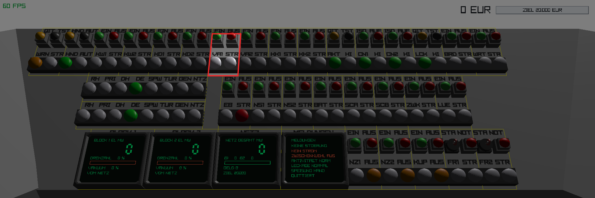
8Betriebsart AUT → drücken
Ab jetzt regeln die Speisewasserpumpen das Dampferzeugerniveau selbsttätig. Erspart ständiges Nachführen.
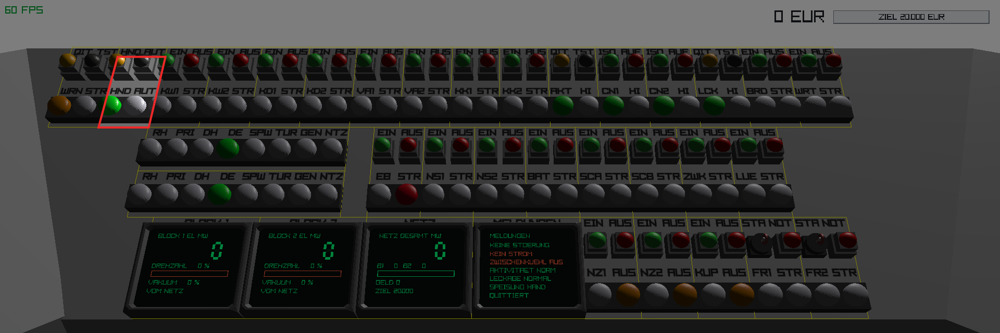
9Blockfreigabe FR1 → Schlüssel drehen
Der Block ist freigegeben, die Leuchte FR1 wird grün. Erst jetzt lassen sich Regelstäbe und Blockantriebe bewegen.
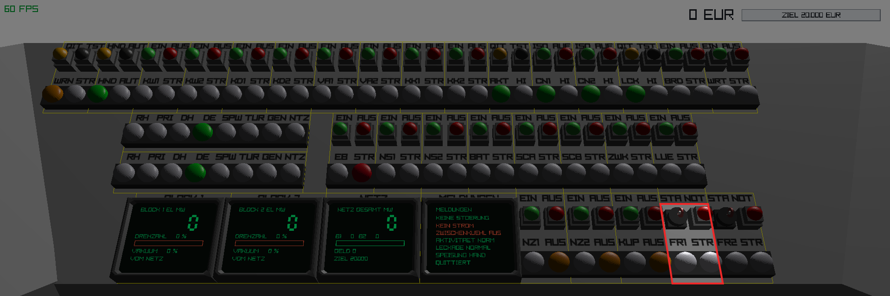
Mit der Pfeiltaste ← zum linken Flügel drehen. Für Block 2 gilt dasselbe auf dem rechten Flügel.
10Hauptkühlmittelpumpe 1 HK1 → EIN
Auf dem linken Flügel, vorderes Band.
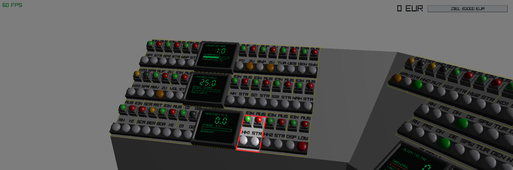
11Hauptkühlmittelpumpe 2 HK2 → EIN
Beide werden gebraucht: eine allein reicht nur bis etwa halbe Leistung. Die Statusleuchte PRI wird grün.
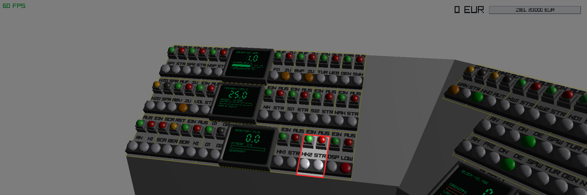
12Stabgruppe G1 → drücken
Ohne freigegebene Stabgruppe lassen sich die Stäbe nicht ausfahren — es erscheint sonst die Meldung KEINE STABGRUPPE.
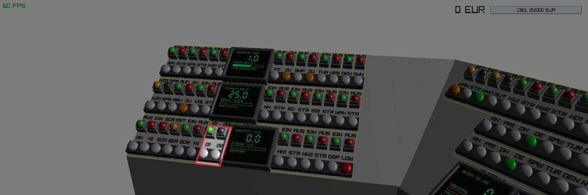
13Regelstäbe RX → Taster AUS mehrfach
Jeder Klick fährt die Stäbe 5 % weiter heraus und erhöht die Leistung. Etwa 40–50 % genügen zum Anfahren. Der grüne Taster heißt AUS, weil er die Stäbe ausfährt.
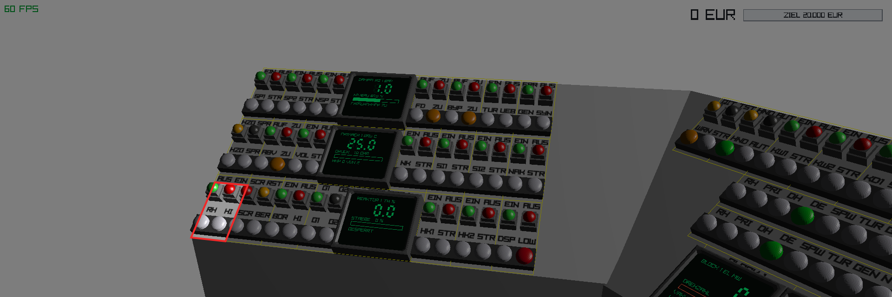
14Druckhalter HZG / SPR
Den Primaerdruck im Bereich 100–170 bar halten: HZG hebt an, SPR senkt. Beide Taster schalten um. Anzeige auf dem Display PRIMAER 1.
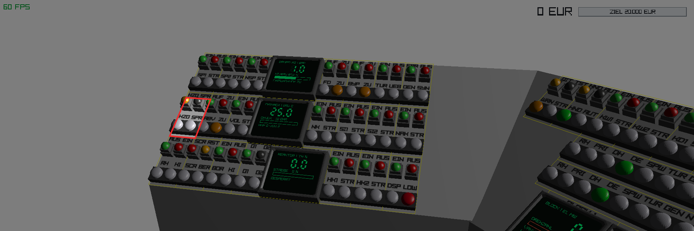
15Umleitstation BYP → AUF
Führt Dampf am Turbosatz vorbei in den Kondensator. Offen lassen, bis der Dampferzeugerdruck 15 bar überschreitet.
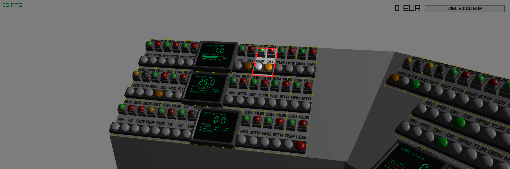
16Frischdampfventil FD → AUF
Gibt den Dampf auf die Turbine frei. Nur bei freigegebenem Block möglich.
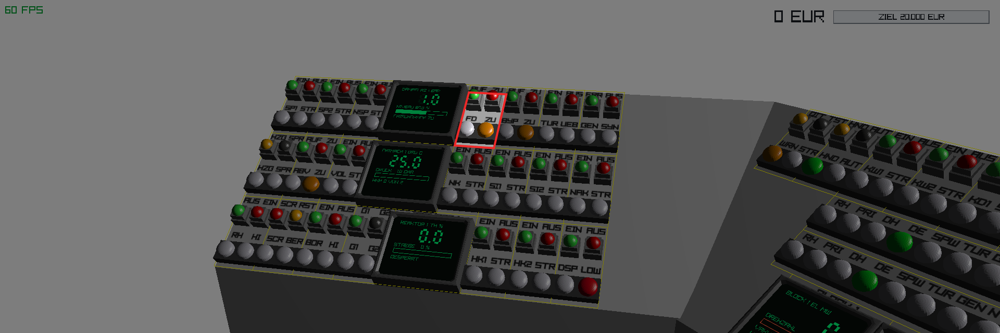
17Turbine TUR → EIN
Setzt ein Vakuum über 50 % voraus, sonst erscheint KEIN VAKUUM. Die Drehzahl läuft auf 100 % hoch.
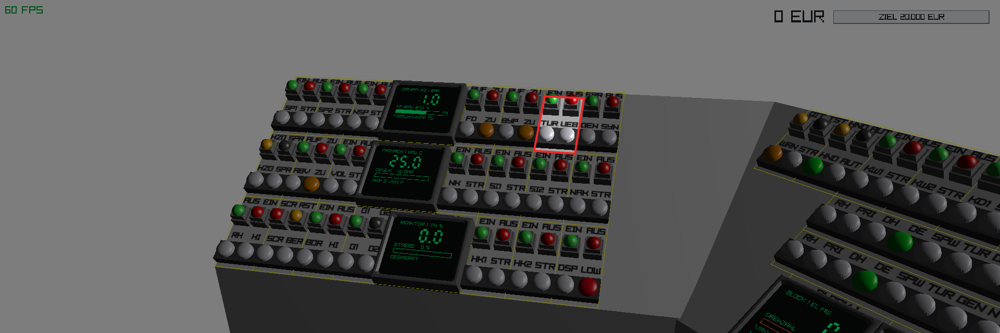
18Generator GEN → ERR
Erregen, sobald die Drehzahl steht. Die orange Leuchte SYN meldet, dass synchronisiert werden darf.
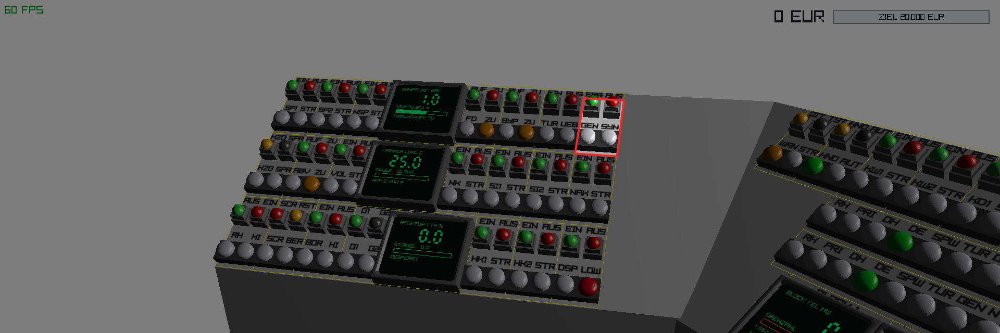
Erst den Abnehmer, dann die Leistung. Steht kein Dampfabnehmer bereit — Umleitstation und Frischdampfventil beide zu — steigt der Dampferzeugerdruck ungebremst, während der Reaktor weiter heizt. Der Block geht dann über den Primaerdruck in Schnellabschaltung.
Zurück zur Mittelfläche mit der Pfeiltaste →.
19Netzschalter NZ1 → EIN
Zurück auf der Mittelfläche. Nur im Drehzahlfenster 98–102 % und mit erregtem Generator. Danach läuft der Erlös.
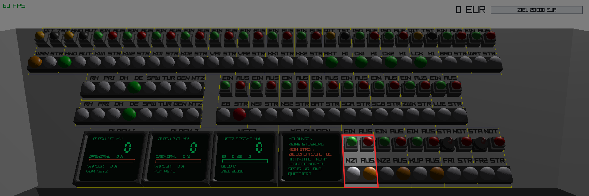
Zur Kontrolle dient die Statusleiste von Block 1 auf der Mittelfläche: RX PRI DH DE SPW TUR GEN NTZ schaltet beim Anfahren von links nach rechts durch. Die erste dunkle Leuchte zeigt, an welcher Stelle die Kette abreißt.
| Größe | Sollbereich | Stellgröße |
|---|---|---|
| Kühlmitteltemperatur | unter 320 °C | Regelstäbe, Anzahl Hauptkühlmittelpumpen |
| Primärdruck | 100 – 170 bar | Druckhalterheizung und -sprühen |
| Dampferzeugerniveau | 30 – 95 % | Speisewasserpumpen, Betriebsart AUTO |
| Turbinendrehzahl | 100 % | selbsttätig durch den Drehzahlregler |
Der zweite Block wird genauso angefahren, mit den Systemen der eigenen Seite: KK2, KW2, KD2, VA2, Freigabe FR2, Netzschalter NZ2. Stromversorgung, Zwischenkühlkreis und Betriebsart sind bereits vorhanden und werden mitgenutzt.
Beide Blöcke am Netz verdoppeln den Erlös. Sie sind bis auf die gemeinsamen Hilfsanlagen unabhängig: eine Schnellabschaltung in Block 1 lässt Block 2 unberührt.
| Bedingung | Klartext |
|---|---|
| Primärdruck über 185 bar | Bx DRUCK HOCH |
| Kühlmitteltemperatur über 340 °C | Bx KUEHLMITTEL HEISS |
| Dampferzeugerniveau unter 10 % | Bx DE-NIVEAU TIEF |
| Ausfall der Stromversorgung | Bx EIGENBEDARF AUS |
| Auslösung von Hand | Bx SCRAM VON HAND |
| NOT-AUS des Blocks | Bx NOT-AUS |
Nach der Abschaltung bleiben rund 6 % der Leistung bestehen, die erst über etwa anderthalb Minuten abklingen. Der Reaktor ist abgeschaltet, aber nicht kalt. Die Kühlung darf deshalb nicht abgestellt werden — mindestens eine Hauptkühlmittelpumpe, die Notkühlung NK oder das Nachkühlsystem NAK muss weiterlaufen, sonst folgt die nächste Auslösung wegen zu hoher Temperatur.
Wiederanfahren: Ursache beseitigen, mit QIT quittieren, dann RST. Erst wenn SCR erloschen ist, lassen sich die Regelstäbe wieder ausfahren.
Fällt der Netzschalter, während noch Dampf auf der Turbine steht, verliert die Maschine ihre Gegenlast und dreht hoch. Bei 110 % spricht der Überdrehzahlschutz an: Frischdampfventil zu, Turbine, Generator und Netzschalter ab, Meldung „Bx UEBERDREHZAHL“.
Vermeiden lässt sich das, indem beim Abfahren zuerst die Leistung zurückgenommen und erst dann der Netzschalter geöffnet wird. Tritt der Fall ein, ist die Umleitstation zu öffnen, damit der Dampferzeugerdruck abgebaut wird.
Der schwerste Störfall, weil er beide Blöcke gleichzeitig trifft: sämtliche Pumpen fallen ab, die Wärmeabfuhr endet, beide Reaktoren gehen in Schnellabschaltung, und die Nachzerfallswärme heizt die Primärkreise ungebremst auf.
Dieses Kapitel richtet sich nicht an den Bediener, sondern dokumentiert Eigenschaften der Umsetzung.
Die drei Pultflächen sind Parallelogramme, die sich in der Draufsicht überlappen: die Ecken der Flügel ragen über die Mittelfläche und umgekehrt. Dort liegen Gridzellen unter dem Nachbartisch, und platzierte Elemente stecken ineinander.
Diese Zonen sind nicht von Hand eingetragen, sondern werden aus der Tischgeometrie berechnet (GameConfig::CellBlocked): eine Zelle ist gesperrt, wenn ihr Mittelpunkt in der Draufsicht auch auf einer anderen Fläche liegt. Ändert sich die Geometrie, wandert die Sperrzone automatisch mit. Das Platzierungssystem weist Elemente dort beim Laden mit einer Warnung ab, und im Spiel sind die betroffenen Zellen rot durchkreuzt.
| Zeile | Mitte (40 Spalten) | Rechts (25) | Links (25) |
|---|---|---|---|
| 0 | 0–4, 35–39 | 0–4 | 21–24 |
| 2 | 0–6, 33–39 | 0–5 | 19–24 |
| 4 | 0–5, 34–39 | 0–5 | 19–24 |
| 6 | 0–3, 36–39 | 0–3 | 21–24 |
| 8 | 0–1, 37–39 | 0–2 | 22–24 |
| 10 | 0, 39 | 0 | 24 |
PlacementSystem::BuildLabel skaliert das Textfeld nach der Regel „passt in die Breite und in die Höhe“. Eine Gridspalte ist doppelt so breit wie die Label-Zeile hoch, also 2:1. Jeder Text mit größerem Seitenverhältnis wird über die Breite begrenzt, und die Zeilenhöhe bleibt ungenutzt.
| Zeichen | 3 | 4 | 5 | 6 | 7 | 8 |
|---|---|---|---|---|---|---|
| genutzte Zeilenhöhe | 100 % | 86 % | 62 % | 55 % | 47 % | 39 % |
Daraus folgt die Drei-Zeichen-Regel für alle Beschriftungen. Die Label-Zeile höher zu machen bringt nichts, weil nicht die Höhe begrenzt, sondern die Spaltenbreite.
Umgesetzt sind außerdem: Renderauflösung der Beschriftungstexturen von 40 auf 96 Pixel erhöht, Mipmaps mit trilinearer und 16-fach anisotroper Filterung (ohne sie fallen dünne Striche beim Verkleinern zufällig weg beziehungsweise verschmieren seitlich), sowie ein Textur-Cache: gleich beschriftete Elemente teilen sich eine Textur, wodurch aus 310 Beschriftungen nur 46 Renderdurchgänge werden.
Die Displays werden dreifach überabgetastet gerendert (GameConfig::ScreenSupersample) und bilinear gefiltert. Ihre Textur wird per inset in die sichtbare Gehäuseöffnung gestaucht, weil die Bildschirmfläche im Modell unter den Rahmen reicht.
Sämtliche Zahlenwerte in diesem Handbuch beschreiben eine Platzhalter-Simulation in assets/scripts/logic.lua, keine echte Thermohydraulik. Die Bilanzen sind allein danach gewählt, dass die Kopplungen zwischen den Anlagenteilen spürbar und die Anlage spielbar ist.
Die Blocklogik steht im Skript nur einmal: alle Bedienelemente heißen b1_… beziehungsweise b2_…, deshalb genügt eine Schleife über die Blocknummer mit Zugriff über _G. Eine dritte Blockfläche wäre entsprechend wenig Arbeit.
Die Aufteilung ist so angelegt, dass die echte Rechnung später ohne Änderung am Pult eingesetzt werden kann: Das Skript hält die Bedienlogik, die Zustandsgrößen wandern nach src/simulation/ in C++-Klassen. Der Grund für diese Trennung: beim Speichern einer Skriptdatei wird der gesamte Lua-Zustand verworfen und neu aufgebaut. Zustandsgrößen in Lua springen dabei jedes Mal auf ihre Startwerte zurück — bei einem Reaktor, der sich über Minuten aufheizt, macht das jedes Feinabstimmen unmöglich. In C++ überleben sie den Reload, während die Konstanten im Skript im laufenden Betrieb änderbar bleiben.
Dieses Verzeichnis listet jede der 71 Bediengruppen mit ihrer Lage am Pult und der Belegung ihrer vier Elemente. Es wird unmittelbar aus den Platzierungsdateien erzeugt und kann deshalb nicht vom tatsächlichen Pult abweichen.
Die Spalte Lage nennt Band und Spalten: Band A liegt am vorderen Pultrand (näher am Bediener), Band C am hinteren. Die Spaltennummer entspricht dem Gridraster der jeweiligen Fläche.
| Kurz | System | Lage | Meldeleuchten | Taster |
|---|---|---|---|---|
| RX | Reaktor, Regelstäbe | Band A, Sp. 0–1 | RX / HI | AUS / EIN |
| SCR | Schnellabschaltung | Band A, Sp. 2–3 | SCR / BER | SCR / RST |
| BOR | Boreinspeisung | Band A, Sp. 4–5 | BOR / HI | EIN / AUS |
| G1 | Stabgruppen 1 und 2 | Band A, Sp. 6–7 | G1 / G2 | G1 / G2 |
| HK1 | Hauptkühlmittelpumpe 1 | Band A, Sp. 12–13 | HK1 / STR | EIN / AUS |
| HK2 | Hauptkühlmittelpumpe 2 | Band A, Sp. 14–15 | HK2 / STR | EIN / AUS |
| DSP | Druckspeicher | Band A, Sp. 16–17 | DSP / LOW | EIN / AUS |
| HZG | Druckhalter: Heizung und Sprühen | Band B, Sp. 0–1 | HZG / SPR | HZG / SPR |
| ABV | Primäres Abblaseventil | Band B, Sp. 2–3 | ABV / ZU | AUF / ZU |
| VOL | Volumenregelung | Band B, Sp. 4–5 | VOL / STR | EIN / AUS |
| NK | Notkühlung | Band B, Sp. 10–11 | NK / STR | EIN / AUS |
| SI1 | Sicherheitseinspeisung Strang 1 | Band B, Sp. 12–13 | SI1 / STR | EIN / AUS |
| SI2 | Sicherheitseinspeisung Strang 2 | Band B, Sp. 14–15 | SI2 / STR | EIN / AUS |
| NAK | Nachkühlsystem | Band B, Sp. 16–17 | NAK / STR | EIN / AUS |
| SP1 | Speisewasserpumpe 1 | Band C, Sp. 0–1 | SP1 / STR | EIN / AUS |
| SP2 | Speisewasserpumpe 2 | Band C, Sp. 2–3 | SP2 / STR | EIN / AUS |
| NSP | Notspeisewasser | Band C, Sp. 4–5 | NSP / STR | EIN / AUS |
| FD | Frischdampfventil | Band C, Sp. 10–11 | FD / ZU | AUF / ZU |
| BYP | Umleitstation | Band C, Sp. 12–13 | BYP / ZU | AUF / ZU |
| TUR | Turbine | Band C, Sp. 14–15 | TUR / UEB | EIN / AUS |
| GEN | Generator | Band C, Sp. 16–17 | GEN / SYN | ERR / AUS |
| Beschriftung | Lage |
|---|---|
| REAKTOR 1 | Band A, Sp. 8–11 |
| PRIMAER 1 | Band B, Sp. 6–9 |
| DAMPFERZ 1 | Band C, Sp. 6–9 |
| Kurz | System | Lage | Meldeleuchten | Taster |
|---|---|---|---|---|
| NZ1 | Netzschalter Block 1 | Band A, Sp. 23–24 | NZ1 / AUS | EIN / AUS |
| NZ2 | Netzschalter Block 2 | Band A, Sp. 25–26 | NZ2 / AUS | EIN / AUS |
| KUP | Schaltanlagenkupplung | Band A, Sp. 27–28 | KUP / AUS | EIN / AUS |
| FR1 | Blockfreigabe Block 1 | Band A, Sp. 29–30 | FR1 / STR | STA / NOT |
| FR2 | Blockfreigabe Block 2 | Band A, Sp. 31–32 | FR2 / STR | STA / NOT |
| EB | Eigenbedarf | Band B, Sp. 15–16 | EB / STR | EIN / AUS |
| NS1 | Notstromdiesel 1 | Band B, Sp. 17–18 | NS1 / STR | EIN / AUS |
| NS2 | Notstromdiesel 2 | Band B, Sp. 19–20 | NS2 / STR | EIN / AUS |
| BAT | Batterieversorgung | Band B, Sp. 21–22 | BAT / STR | EIN / AUS |
| SCA | Schiene A | Band B, Sp. 23–24 | SCA / STR | EIN / AUS |
| SCB | Schiene B | Band B, Sp. 25–26 | SCB / STR | EIN / AUS |
| ZWK | Zwischenkühlkreis | Band B, Sp. 27–28 | ZWK / STR | EIN / AUS |
| LUE | Lüftung | Band B, Sp. 29–30 | LUE / STR | EIN / AUS |
| WRN | Sammelmeldungen | Band C, Sp. 2–3 | WRN / STR | QIT / TST |
| HND | Betriebsart Hand / Automatik | Band C, Sp. 4–5 | HND / AUT | HND / AUT |
| KW1 | Hauptkühlwasser Block 1 | Band C, Sp. 6–7 | KW1 / STR | EIN / AUS |
| KW2 | Hauptkühlwasser Block 2 | Band C, Sp. 8–9 | KW2 / STR | EIN / AUS |
| KD1 | Kondensator Block 1 | Band C, Sp. 10–11 | KD1 / STR | EIN / AUS |
| KD2 | Kondensator Block 2 | Band C, Sp. 12–13 | KD2 / STR | EIN / AUS |
| VA1 | Vakuumpumpe Block 1 | Band C, Sp. 14–15 | VA1 / STR | EIN / AUS |
| VA2 | Vakuumpumpe Block 2 | Band C, Sp. 16–17 | VA2 / STR | EIN / AUS |
| KK1 | Komponentenkühlung Block 1 | Band C, Sp. 18–19 | KK1 / STR | EIN / AUS |
| KK2 | Komponentenkühlung Block 2 | Band C, Sp. 20–21 | KK2 / STR | EIN / AUS |
| AKT | Aktivitätsüberwachung | Band C, Sp. 22–23 | AKT / HI | QIT / TST |
| CN1 | Containment Block 1 | Band C, Sp. 24–25 | CN1 / HI | ISO / AUF |
| CN2 | Containment Block 2 | Band C, Sp. 26–27 | CN2 / HI | ISO / AUF |
| LCK | Leckageüberwachung | Band C, Sp. 28–29 | LCK / HI | QIT / TST |
| BRD | Brandschutz | Band C, Sp. 30–31 | BRD / STR | EIN / AUS |
| WRT | Wartenklimatisierung | Band C, Sp. 32–33 | WRT / STR | EIN / AUS |
| Beschriftung | Lage |
|---|---|
| BLOCK 1 | Band A, Sp. 7–10 |
| BLOCK 2 | Band A, Sp. 11–14 |
| NETZ | Band A, Sp. 15–18 |
| MELDUNGEN | Band A, Sp. 19–22 |
| Kurz | System | Lage | Meldeleuchten | Taster |
|---|---|---|---|---|
| RX | Reaktor, Regelstäbe | Band A, Sp. 6–7 | RX / HI | AUS / EIN |
| SCR | Schnellabschaltung | Band A, Sp. 8–9 | SCR / BER | SCR / RST |
| BOR | Boreinspeisung | Band A, Sp. 10–11 | BOR / HI | EIN / AUS |
| G1 | Stabgruppen 1 und 2 | Band A, Sp. 12–13 | G1 / G2 | G1 / G2 |
| HK1 | Hauptkühlmittelpumpe 1 | Band A, Sp. 18–19 | HK1 / STR | EIN / AUS |
| HK2 | Hauptkühlmittelpumpe 2 | Band A, Sp. 20–21 | HK2 / STR | EIN / AUS |
| DSP | Druckspeicher | Band A, Sp. 22–23 | DSP / LOW | EIN / AUS |
| HZG | Druckhalter: Heizung und Sprühen | Band B, Sp. 6–7 | HZG / SPR | HZG / SPR |
| ABV | Primäres Abblaseventil | Band B, Sp. 8–9 | ABV / ZU | AUF / ZU |
| VOL | Volumenregelung | Band B, Sp. 10–11 | VOL / STR | EIN / AUS |
| NK | Notkühlung | Band B, Sp. 16–17 | NK / STR | EIN / AUS |
| SI1 | Sicherheitseinspeisung Strang 1 | Band B, Sp. 18–19 | SI1 / STR | EIN / AUS |
| SI2 | Sicherheitseinspeisung Strang 2 | Band B, Sp. 20–21 | SI2 / STR | EIN / AUS |
| NAK | Nachkühlsystem | Band B, Sp. 22–23 | NAK / STR | EIN / AUS |
| SP1 | Speisewasserpumpe 1 | Band C, Sp. 6–7 | SP1 / STR | EIN / AUS |
| SP2 | Speisewasserpumpe 2 | Band C, Sp. 8–9 | SP2 / STR | EIN / AUS |
| NSP | Notspeisewasser | Band C, Sp. 10–11 | NSP / STR | EIN / AUS |
| FD | Frischdampfventil | Band C, Sp. 16–17 | FD / ZU | AUF / ZU |
| BYP | Umleitstation | Band C, Sp. 18–19 | BYP / ZU | AUF / ZU |
| TUR | Turbine | Band C, Sp. 20–21 | TUR / UEB | EIN / AUS |
| GEN | Generator | Band C, Sp. 22–23 | GEN / SYN | ERR / AUS |
| Beschriftung | Lage |
|---|---|
| REAKTOR 2 | Band A, Sp. 14–17 |
| PRIMAER 2 | Band B, Sp. 12–15 |
| DAMPFERZ 2 | Band C, Sp. 12–15 |